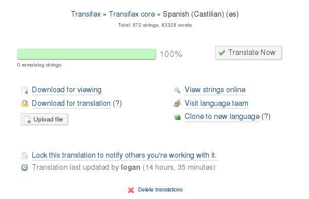
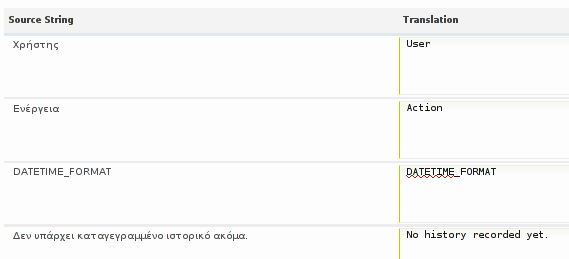
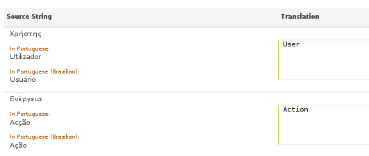
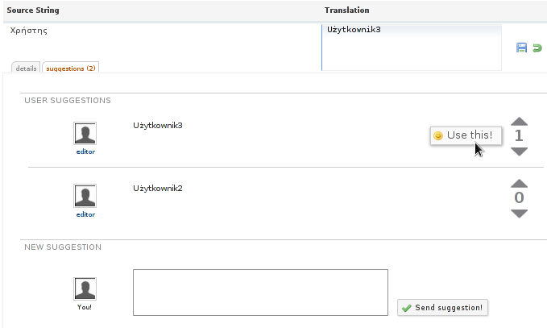
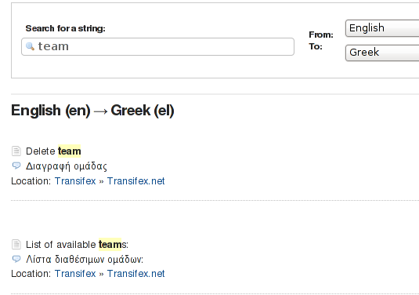
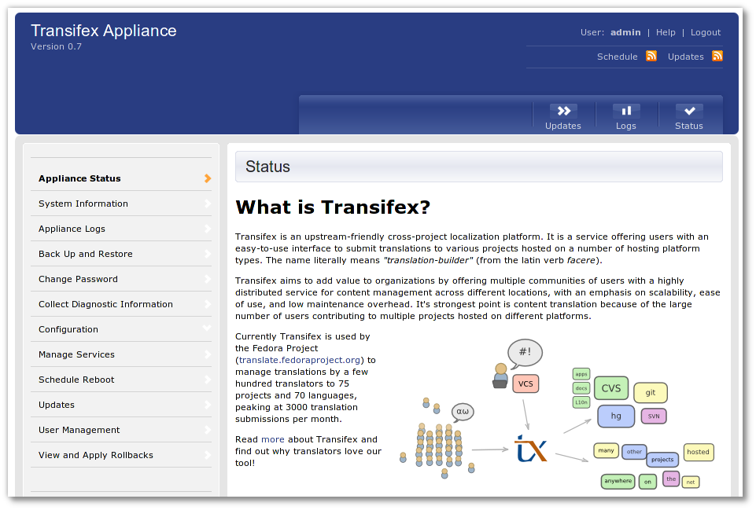

For the most up-to-date information, please refer to Transifex.com and support.transifex.com.
Transifex version 1.0 (Proteus)¶
Welcome to Transifex 1.0, codenamed Proteus!
- Released:
- October 15th 2010
Transifex 1.0 ‘Proteus’ is a major production release of Transifex. It is targeted for new installations of Transifex and parties willing to upgrade to a new major version to take advantage of new features.
Transifex 1.0 represents arguably the single biggest advancement in Transifex since its original release. This release got something like a ‘heart transplant’: a brand-new core storage engine was introduced, capable of much more than the file-based previous one.
Here’s a 40k-foot view of the release major features and numbers:
- Brand New Translation Storage Engine
- QT (TS) translation file format support
- Source language file tracking over HTTP
- Translation file metadata auto-updating
- Clone language
- Non-English Source Languages
- Lotte: Multiple Source Languages, Suggestions, Keyboard Shortcuts, Translation Memory
- Application Programmable Interface
665 changesets recorded
31 tickets resolved
1044 files changed, 143677 insertions(+), 145152 deletions(-)
Proteus – Art from the cover to Uncanny X-Men #127, by John Byrne
What’s new in Transifex 1.0¶
Wow. There are so many new things that we don’t know where to start from!
Brand New Translation Storage Engine¶
The core Transifex engine has moved away from the previous VCS-bound design and is now boasting a brand new Translation Storage Engine. The new engine was built from the ground-up for increased flexibility and robustness, using a string-based management system (instead of a file-based one) which drills-down to the level of single translatable entities.
On top of this storage engine, a multi-layered infrastructure of importers and exporters was built, which handles different file formats. These features power a file-agnostic Storage engine for all projects.
Here are some of the major benefits of this approach:
- Increased Security
- Higher Predictability
- Streamlined builds
- Versatility
- Improved Scalability
- Simplicity
The new storage engine brings the notion Resources which is obsoleting Components.
Please refer to the section The big, scary Transifex One-Dot-Zero for the background behind this change and information on how this affects you.
Really. Go now. The big, scary Transifex One-Dot-Zero.
QT (TS) translation file format support¶
The new release brings support for arbitrary i18n backends and comes with built-in native support for PO files and the QT .ts translation files. This allows the translation of any QT-based application, including mobile applications built for the N900 ‘MeeGo’ platform.
Qt is a cross-platform application framework that is widely used for developing application software with graphical user interface (GUI), Qt is most notably used in Autodesk, Google Earth, KDE, Adobe, Skype, Samsung, Philips, Panasonic and VirtualBox.
Here’s how this format looks like:
<?xml version="1.0" encoding="utf-8"?>
<!DOCTYPE TS>
<TS version="2.0" language="en_US">
<context>
<name></name>
<message id="xx_incoming_call_title">
<location filename="../meego-handset-dialer/src/alertdialog.cpp" line="21"/>
<source>Incoming call from:</source>
<translation type="unfinished"></translation>
</message>
...
</context>
</TS>
By supporting the TS format natively, Transifex allows the internationalization of applications written in the QT framework in a seamless way. All aspects of the Transifex interface behave exactly the same between PO and QT files, such as the statistics generation framework and the web translation editor.
Source language file tracking over HTTP¶
Transifex can detect changes to your source strings by monitoring a specific file for modifications. This file can be hosted anywhere on the Internet. Here’s an example where we can copy-paste the link provided by GitHub to the raw English PO file to use in Transifex.
Please note that this release removes support for intltool-based projects without a POT file. If your project is such one, please create a POT file using intltool, commit it to your repository, and point Transifex to it over the web.
Translation file metadata auto-updating¶
Transifex now automatically updates the PO file headers with the package’s information, last translator details, language plural rules etc. Here’s an example:
# Translation file for Transifex.
# Copyright (C) 2007-2010 Transifex Ltd.
# This file is distributed under the same license as the Transifex package.
#
msgid ""
msgstr ""
"Project-Id-Version: Transifex (.org)\n"
"Report-Msgid-Bugs-To: \n"
"POT-Creation-Date: 2010-10-13 12:26+0000\n"
"PO-Revision-Date: 2010-10-15 10:11+0000\n"
"Last-Translator: Jannis <email@example.com>\n"
"Language-Team: German\n"
"MIME-Version: 1.0\n"
"Content-Type: text/plain; charset=UTF-8\n"
"Content-Transfer-Encoding: 8bit\n"
"Language: de\n"
"Plural-Forms: nplurals=2; plural=(n != 1)\n"
Clone language¶
A common feature request was to allow translators to ‘clone’ a whole language to a new one and then proceed to do any corrections needed. Good candidate languages include British English and Brazilian Portuguese.

Non-English Source Languages¶
Transifex adds support for resources where the source language is something other than English. This means that your content can be written in German and you can have it translated to other languages using German as the source language.
The following screenshot shows Greek being used as the source language and English as the target.

You may select the source language of your resource when you are creating it. Note that due to a limitation in the Gettext PO format, only source languages which have two plural rules are supported.
Web Editor (Lotte) Improvements¶
Per-string saving¶
Lotte was re-written from scratch in Transifex 1.0. With the new version, Lotte saves each string the moment you are finished with its translation. By clicking the “Save” button next to the string, you are certain your work will never be lost because a butterfly in Japan caused your browser to crash in a mysterious way.
Additionally, Lotte offers an “Undo” button which reverts the translation to its original form, in case you’d like to do so.
Multiple Source Languages in Lotte¶
The Online web editor can now display the source strings in more than one language. This can be achieved with a drop-down on the top-right side.

This feature is very quite useful for translators who can use languages other than English as their primary language, such as those who can speak more than two languages, or those who would like to use a third language for reference, such as translators using the various variants of Spanish).
Suggestions¶
Transifex now supports translation suggestions for each translatable entity which are provided by translators themselves. These can be viewed by clicking the “suggestions” button in the online web editor. Suggestions come in addition to the Google-translate feature in the web editor.
Translators can also vote on suggestions. Popular suggestions are shown at the top, similarly to how stackoverflow works, allowing the most popular suggestion to be chosen as the best one.

Suggestions replace the previous feature of Reviews.
Keyboard Shortcuts¶
Lotte now supports keyboard shortcuts for faster operation. Here’s a list of the currently supported shortcuts:
| Shortcut Key | Definition | Description |
|---|---|---|
| Alt-l | Next page | Moves editor to the next translations page. |
| Alt-j | Previous page | Moves editor to the previous translations page. |
| Alt-i | Move up row | Moves focus one row upwards. |
| Alt-k | Move down row | Moves focus one row downwards. |
| Alt-g | Copy source string | Fill in the translation textarea with the content of the source string. (Copy the source string as it is, to the translation area.) |
Translation Memory v0.1¶
Transifex now supports a basic version of a translation memory. You can now search how a particular string was translated in other languages, by clicking the “Search Translations” button in the Web Editor.

Application Programmable Interface¶
This version includes a rich API which can be used to interact with Transifex. It includes methods to query Transifex for projects and statistics, but also to import and export files from Transifex itself.
Under-the-hood Improvements¶
- Added Turkmen and Uzbek languages.
- Added plural rules for new languages
- Overhaul of URL definition mechanism in resources et al apps.
- Management command txlanguages now fully replaced txcreatelanguages which has been removed.
- Language details page is now only listing the available languages on Transifex. In the next releases we’re expecting it to host a variety of tools to help translators find projects they are interested in.
- Deprecate MEDIA_ROOT, userprofile images around.
- Raise exception if LINGUAS file cannot be found.
- Stripped language detail page even more.
- Transifex now fully supports Django 1.2 with all the improvements this brings. Security is also enhanced with the new CSRF support included in this version.
- The following applications were removed from Transifex:
- reviews (replaced by suggestions)
- vcs, codebases, translations (replaced by ‘resources’)
- tarball
- submissions
- txcollections
Translations¶
Listed below are the languages which have more than 80% translations of the interface and the usernames of our translators.
- Catalan (ca) – redcrash
- Chinese (Taiwan) (zh_TW) – zerng07
- Dutch (Netherlands) (nl) – RockyTDR
- Finnish (fi) – jari
- Hebrew (he) – Yaron
- Hungarian (hu) – NB
- Panjabi (Punjabi) (pa) – aalam
- Portuguese (pt) – smarquespt
- Russian (ru) – winterheart
- Spanish (Castilian) (es) – logan
- Ukrainian (uk) – yurchor
For more information on our translations, please visit http://www.transifex.com/projects/p/transifex.
Getting Transifex 1.0¶
You can experience Transifex 1.0 live at the upstream instance hosted by Transifex, at http://www.transifex.com/.
Project and community managers who want to deploy Transifex for their own community can get Transifex in a variety of ways. Transifex should be easily-installable:
easy_install transifex
A tarball is available from the following locations:
- The Python Packaging Index (Cheeseshop): http://pypi.python.org/pypi/transifex/
Full information about installing Transifex can be found in the Installation documentation.
The Transifex Appliance¶
If you want to play with the latest Transifex code, you may want to use our development images for the Transifex Appliance. Following the stand-alone, “batteries included” model of software appliances, you get a complete Transifex system with all dependencies and services pre-configured so that you can start experimenting with it right away. Choose from ISO, VMware or EC2 images, for both x86 and x86_64 architectures to run on a virtual machine, dedicated server, or using virtualization software.
Your appliances can be updated using its own web based management system by pointing your browser to the appliance’s IP using port 8003. Login with the credentials ‘admin’ and ‘password’. Make sure to change the password once you’ve successfully logged in.
This appliance version is based on the latest branch of Transifex, where a couple of projects have already been created for you to play with. Log in using either guest/guest or editor/editor as your user name and password combination and tinker to your heart’s content!
Make sure to read the documentation and file issues/send us your feedback.
- Transifex Appliance web site:
- https://www.rpath.org/ui/#/appliances?id=https://www.rpath.org/api/products/transifex
- Stable and development images:
- Click the Releases tab in the web site
Deploying on EC2¶
You can deploy the EC2 image straight from inside rBuilder Online, and most things will be configured for you automatically.
Alternatively, you may deploy to using the EC2 Web Panel. Here are some tips to get an appliance running this way:
- Choose an appliance from the rPath Builder website. Look for a key called “Appliance AMI”, which is a number which identifies the appliance.
- Login to Amazon EC2 and click to launch a new instance on the EC2 US servers.
- Search for the AMI at the “Community AMIs” tab, or simply search for “Transifex”.
- If you’d like to enable SSH, create or re-use your key pairs on the related screen.
- On the Firwall page, if you’re launching a public server, select ‘default’. This will allow HTTP requests to the related ports (e.g. port 80).
- Click Launch and wait until the appliance is running. You’ll see a “Public DNS” field which has a long hostname such as ‘ec2-xxx-xx-x-xx.compute-1.amazonaws.com’. This is your server’s hostname.
You’re ready to go. Fire up your browser at this hostname and login with the credentials mentioned above.
To access the admin panel, navigate to https://<appliance-hostname>:8003/. If you’re getting an error, click “Security Groups” in the Amazon Management Console and add TCP 8003 to the allowed connections.
Upgrading to this version¶
To upgrade the code, update your package distribution as usual:
- If you installed from your package distribution, check if there’s been a package upgrade and go for it.
- If you used easy_install, run easy_install -U to upgrade.
- Fresh tarballs are available, if you installed from a release zipfile.
- Finally, if you’re of the daredevil kind and feed straight from the source, git pull should do the trick for you.
Dependencies¶
The following extra dependencies was added since the last major version:
- Django 1.2.3
- python-magic
- PIL 1.1.7
One dependency is no longer required starting from this version:
- mercurial
Instructions on how to install the dependencies can be found at the Installation docs. You’ll need to complete this step before actually doing the database migration.
Migration¶
Because Transifex 1.0 is very different from all previous versions and the database schema has undergone quite a lot of changes, the migration to Transifex 1.0 completely changes your existing database and the migration is not revertable, so before starting the migration make sure you have a backup of your whole database in case something goes wrong.
Before migrating to Transifex 1.0, first you’ll need to upgrade from your current version to 0.9.1. In this version, a management command was introduced (python manage.py txcreatemap --help for more info) which creates a mapping between the old notion of project Components and the new Resource objects. This mapping is stored in the database and is used for migrations to version 1.0.
After running successfully the txcreatemap command, you should be ready to do the actual upgrade of Transifex to version 1.0. Once you have the new Transifex code, you need to create the new models in the database and update existing ones. To do this, you need to run:
python manage.py syncdb --noinput
python manage.py migrate --ignore-ghost-migrations --noinput
Then, you only need to create new notice types and new languages by executing the following commands:
python manage.py txcreatenoticetypes
python manage.py txlanguages
Now, your Transifex instance should be up and running but without your old data. To complete the data migration, the only thing left is to run the actual migration script which is called txmigratemap (python manage.py txmigratemap --help for more info) and wait for it to finish:
python manage.py txmigratemap
Note
Depending on the size of the database and the number or projects and components that you have, this process may take up to several hours.
Somethings that you should check before starting the migration to ensure that all components will be migrated successfully are the following:
- Checkout all components before starting the migration as the migration script uses the cached files (msgmerged) which are generated by the statistics generation process.
- Each component must have a valid .pot or source language file (e.g. en.po) related to the source language. If no associated file can be found or the file is not valid (can be checked with msgfmt -c file) the migration of the related component will be skipped.
- Each tranlation file associated with a language in a component must be valid or the language translations for this component will not be migrated.
- Every translation file that doesn’t have the related language registered in the database of Transifex will not be imported.
- Translation files that have different number of plurals for a language than the one Transifex has in its database will have their pluralized strings ignored. This may cause the translated percentage to decrease for some languages and Components.
Sample Migration¶
A sample run for a migration from Transifex version 0.9 to Transifex 1.0 follows (all stdout/sterr output are omitted):
git clone http://code.transifex.com/transifex.git
git checkout 0.9.1
python manage.py txcreatemap
git checkout 1.0 # or latest changes
python manage.py syncdb --noinput
python manage.py migrate --ignore-ghost-migrations --noinput
python manage.py txcreatenoticetypes
python manage.py txlanguages
python manage.py txmigratemap # Convert components into Resources.
Contributors¶
The following people have contributed to this release, with one way or another:
- Andreas Loupasakis
- Diego Búrigo Zacarão
- Dimitris Glezos
- Seraphim Mellos
- timeless
- Og Maciel
- Zbigniew ‘Gandalf’ Braniecki and Seth Bindernagel
- Sarah Kerrigan and Zeratul
For a list of our awesome translators, refer to the Translations section.
A big “Thanks” goes to all the folks from MeeGo and Mozilla for their support in this release.
Transifex 1.0 Development Releases¶
- Alpha: 1 September 2010
- Beta: 14 September 2010
- Final: 15 October 2010
Note
Why the name ‘Proteus’?
Proteus was a cool villain from X-men, just like all the codenames of our releases.
He was also an early sea-god (‘Πρωτεύς’) from Greek mythology. His name suggests the “first”, or “firstborn” and can foretell the future. Proteus is a shape-shifter and will answer only to someone who is capable of capturing him. From this feature of Proteus comes the adjective protean, with the general meaning of “versatile”, “mutable”, “capable of assuming many forms”. “Protean” has positive connotations of flexibility, versatility and adaptability.
All the above match perfectly with the characteristics of Transifex 1.0 ifself. The best is yet to come.
Next Section: Transifex version 0.9.x release notes »